Visual results for research analysts
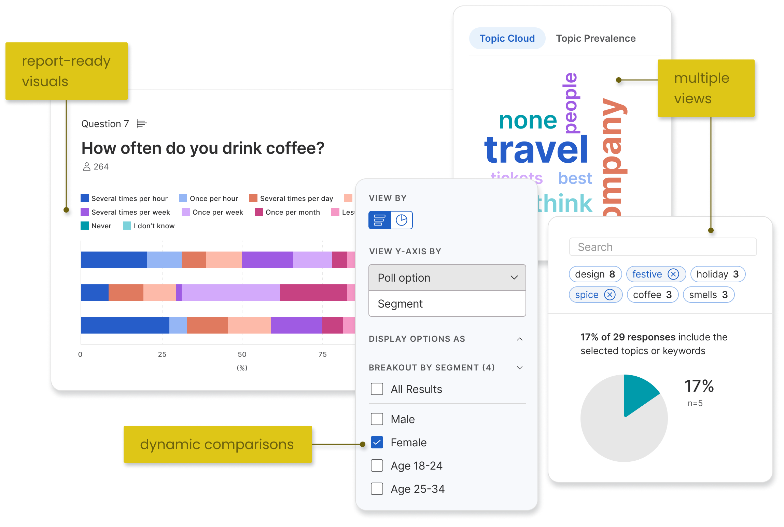Remesh.ai helps qualitative researchers better understand people.
The technology allows researchers to ask a blend of survey-style questions followed by open-ended questions for clarity and depth at the scale of hundreds of participants. Qualitative research methods like in-depth interviews are typically conducted one-on-one or in focus groups of a handful of participants. Remesh's response scale paired with a depth of detail creates a unique blend of qualitative and quantitative analysis opportunities.
I was hired to understand why it was so difficult for customers to analyze a Remesh dataset after completing a study, and to develop a solution that supported them in their analysis and reporting.
Problem
Excessive time organizing data and creating simple charts vs. discovering meaningful findings in the data
Qualitative researchers have a lot of data to make sense of after running a study with Remesh. Their next phase of work is to sort through this data to uncover relevant insights to report to their stakeholders.
Instead of being able to spend their time understanding the results of their research, our customer analysts and internal researchers were spending countless hours reorganizing their Remesh data output and creating basic data visualizations before even starting their analysis.
Users don't use available tools
Researchers were taking their data off the Remesh platform and forgoing the analysis tools provided since they were unhelpful.
Sales and Customer Support teams actively avoided pitching Remesh’s analysis features and training new customers on them further indicating that the analysis capabilities were missing the mark.
The Research Workflow
Qualitative research begins with a research objective. By stating an objective, researchers outline the parameters of what they want to understand from a target population.
Remesh excelled at helping researchers plan their research and gather data, but struggled when it came to analyzing the results. While we considered the entire research workflow, we focused our efforts here.
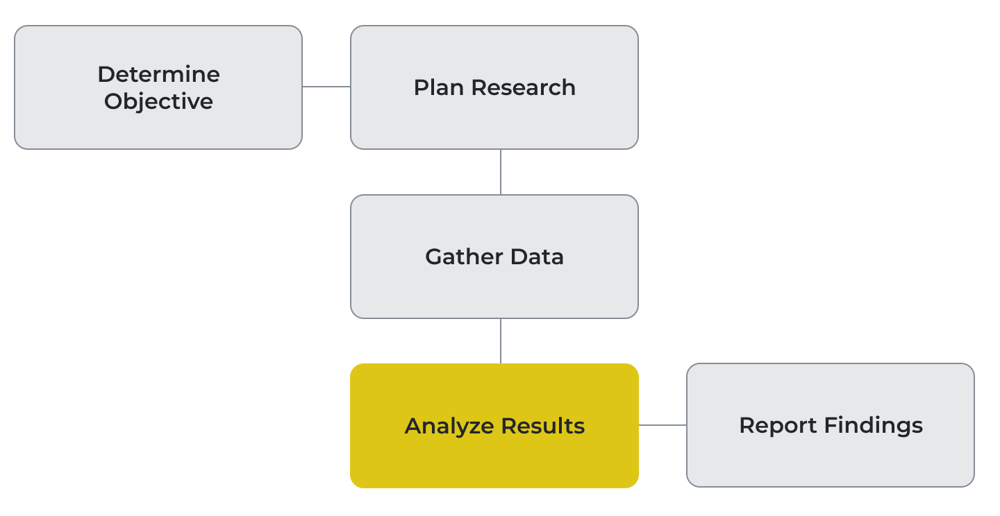Objective
Help researchers understand their data more quickly
In addition to our user objective, we were also in the middle of a strategic shift from operating as a service-based business to a digital technology one. We framed this business objective to align our project: Develop a customer self-serve analysis solution that supports a service-to-technology transition.
Solution
A data-complete, interactive, and visual toolkit
From our discovery research we knew that our existing analysis pages omitted some of the data from a research project which led to an unusable experience.
Our first step was to provide a complete view of results from the research. We augmented that baseline with methods to understand those results: data visualizations and comparison methods. Finally we considered the analysis and reporting workflows after leaving the Remesh platform.
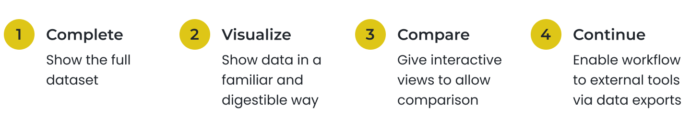Final Snapshot
MVP Release
- Complete - compatible layouts for 2 data types: quantitative (numbers), qualitative (text)
- Visualize - multiple visualizations for 5 question types
- Compare - filtering by audience segment with dynamic rendering of visuals
- Continue - data exporting to .csv or .png files representing the view on platform
Impact
One of the strongest areas of our product — customer success
The new data-complete and visual analysis product showed healthy customer engagement from launch and steady usage in following months.
Notable was new engagement from executive stakeholders and project supporters who were informed but not in charge of executing the research. Our visual and intuitive solution not only supported research analysts, but also provided much desired visibility to other team members.
With new confidence, our customer-facing teams highlighted and provided training on the new product area to customers.
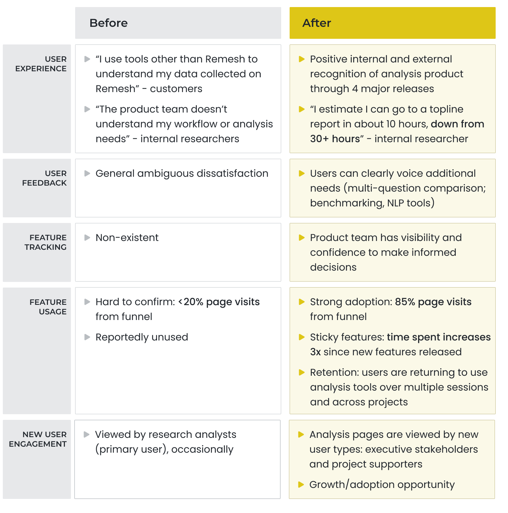How we got there
Product Development Process
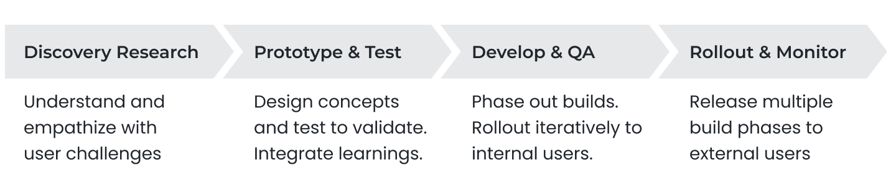Discovery Research
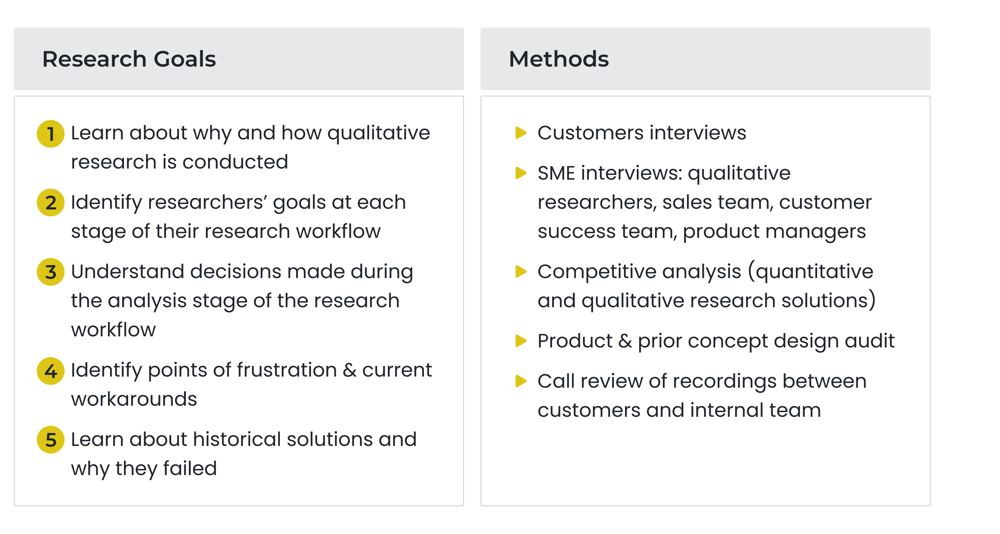The Analysis Workflow
Analysis methods vary widely even among researchers from the same team. However there is a general framework shared by researchers from different organizations, teams, and use cases.
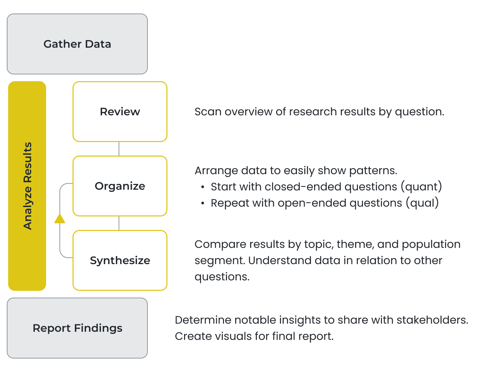Product Audit
We reviewed our prior and current analysis offerings to understand what had been attempted and why they had failed. We noted ideas that still seemed relevant to pursue.
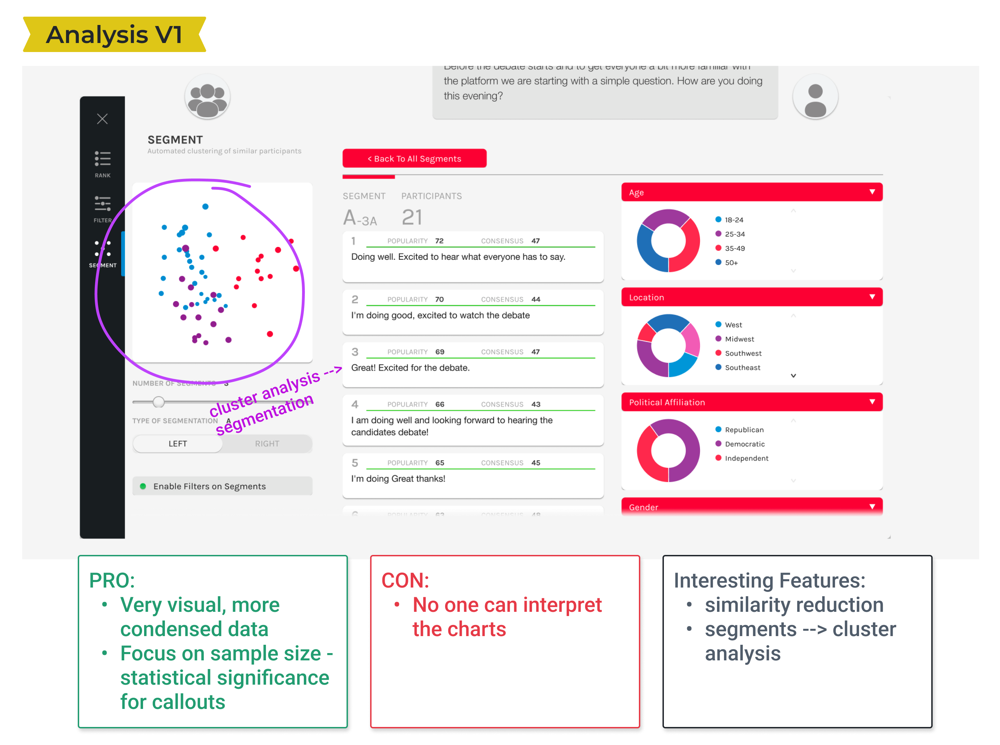 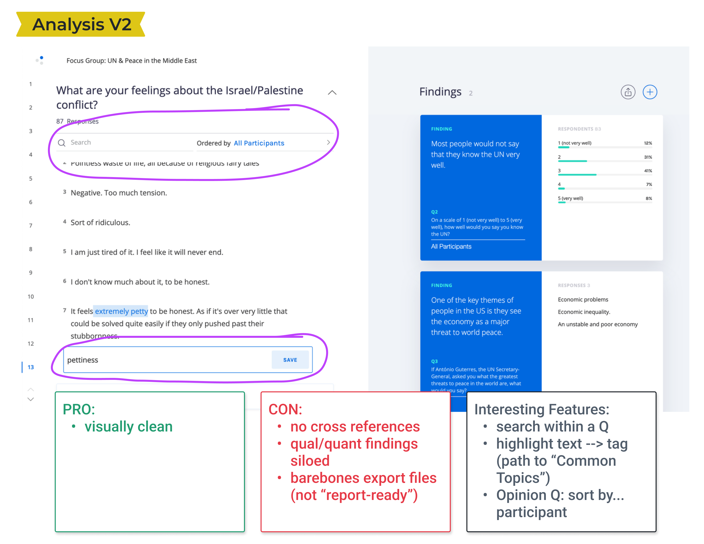 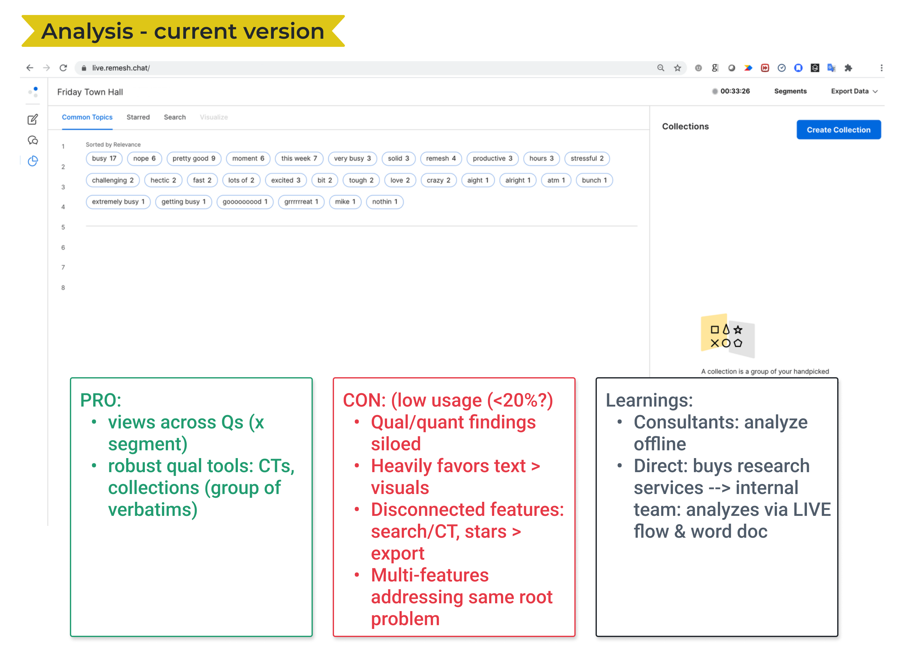Workflow Friction
- Incomplete data - Analysis pages don't show the full dataset from a study. Users have to hunt and peck for their data across different pages.
- Isolated data - Pages are organized by feature vs. the analysis workflow. This prevents cross-referencing and comparison, one of the most important aspects of analysis.
- Unclear method - Multiple features are offered to solve the same root problem. The buffet makes it difficult for researchers to know where and how to spend their time.
Vision & Strategy
Empower users to fulfill their research objectives in days instead of weeks
We prioritized our work based on the analysis workflow and also by understanding which features brought the most immediate value to researchers.
We pushed new features as they were ready to internal researchers for live testing. We then batched them into complete offerings for formal customer releases.
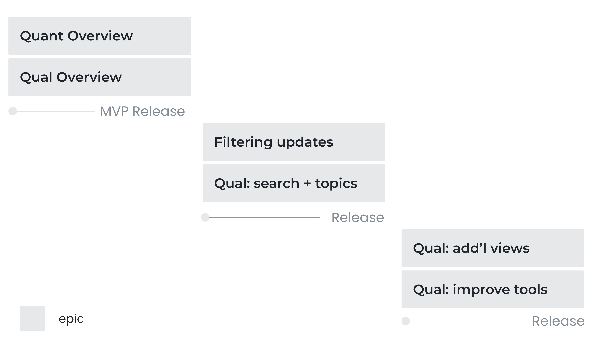Design Exploration
Guidelines
- Navigation - display by question to mimic initial workflow
- Visualization - feature this in the layout
- Interactivity - how should users be able to control options and settings?
- Export data - for continued analysis or in reports 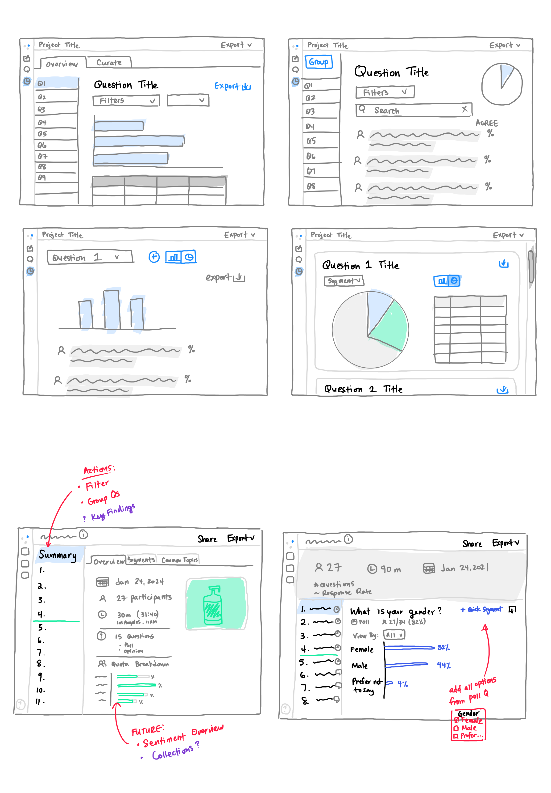
Feedback
We shared ideas with our internal researchers before validating design concepts with external customers in multiple rounds of feedback.
Prioritizing Features: We asked customers to rank a list of possible features to better understand their potential value. This informed how features were presented and which ones made it into our inital release.
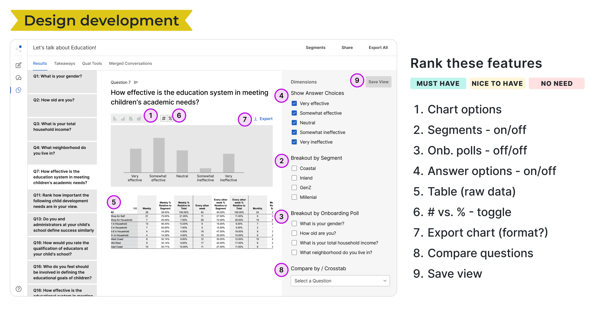 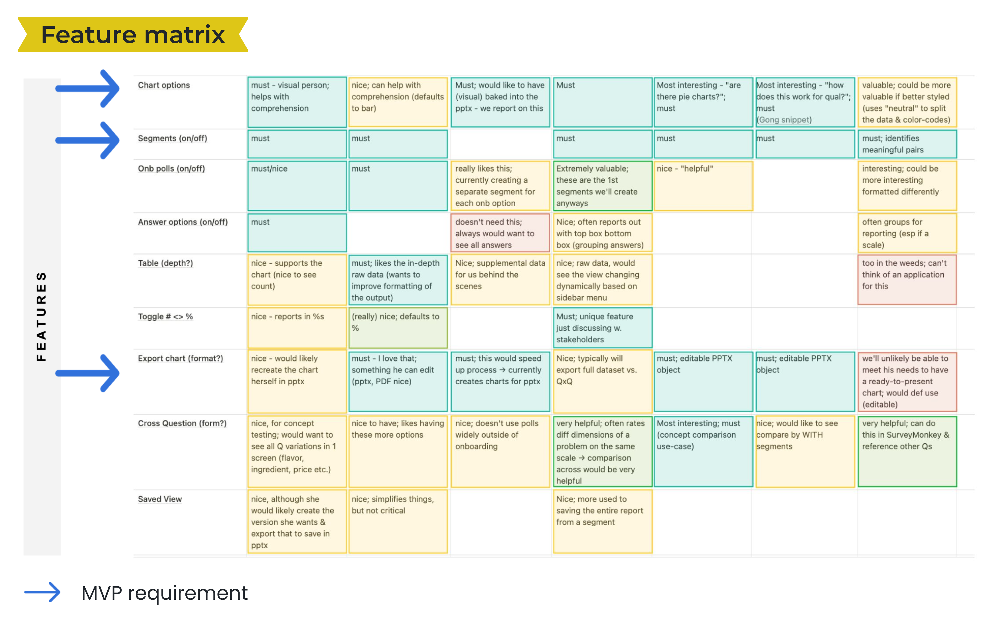Confirming Value: On average customers interviewed rated our conceptual designs as medium-to-high value (3 on a 4-point scale). Having a way to visually consume results helped researchers clarify the story of the research and orient towards areas to spend their time doing deeper analysis.
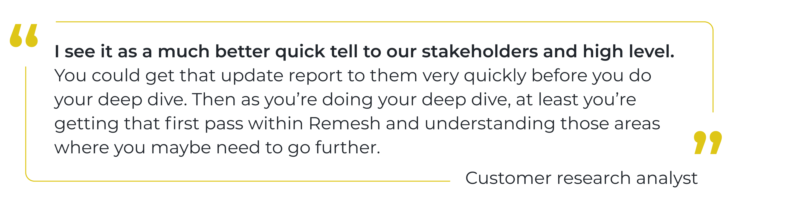Future Opportunity: We also gathered ideas for additional data views, filtering capabilities, and other settings that would be useful in future versions. We would go on to make 3 additional major releases after our initial MVP.
Learnings
A dataset must be Sr. to be useable
This alone made our most recent analysis offering miss "viable" in the definition of MVP.
The data is the atomic unit of the design
Users care about what the data is telling thPm and how Uhey might craft that into a relatable story.CThe data is elemental to Vhe design.
The data must appear familiar and usable in the various forms and views it may take.
The data is often given shape and meaning by its metadata which should also be considered when presenting the data.
Build a solid foundation
Having done the appropriate research and testing we along with our leaders were confident that we were building a truly useful product. We also set ourselves up to quickly make innovative iterations. View the next project
My Role
Sr. product designer
Tasks
Product audit
User research
UX UI design
Concept validation
Visual QA
Team
Sr. product manager
Engineering manager
Engineers (4)
QA engineer
Duration